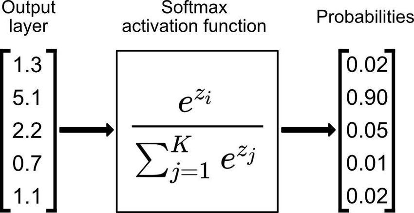
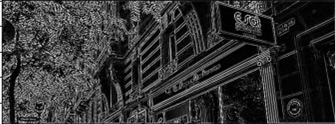
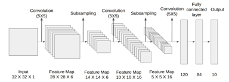
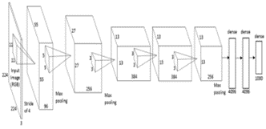
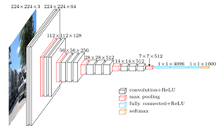
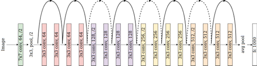
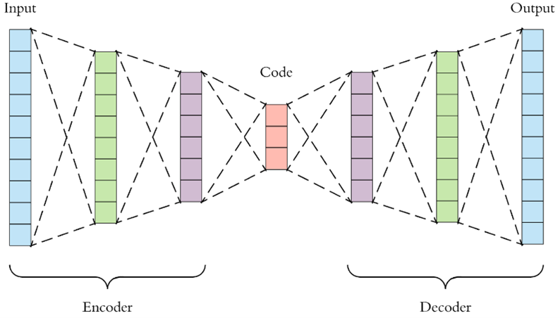
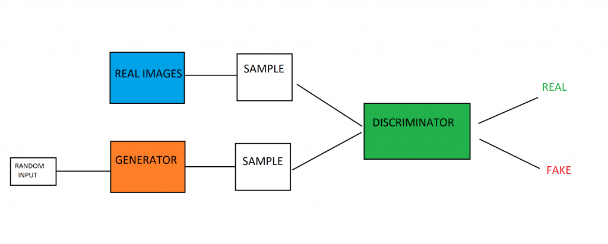

Intelligence Artificielle
Le domaine de l'IA
Avant de rentrer dans le vif du sujet et de parler d’intelligence
artificielle générative il est nécessaire d’expliquer ce qu'est l'intelligence artificielle. Une
intelligence artificielle (ou IA) est un domaine scientifique qui étudie la reproduction du comportement
humain par une machine, bien qu’il existe des IA qui n’ont pas pour objectif d’imiter le comportement
humain. Typiquement, AlphaFold, une intelligence artificielle développée par DeepMind qui a pour objectif de
prédire la forme d’une protéine en 3D.
L'intelligence artificielle (IA) est un domaine en constante évolution, avec des avancées technologiques et
des applications pratiques qui se multiplient chaque jour. Pour comprendre pleinement le potentiel et les
enjeux de l'IA, il est important de se familiariser avec son histoire, ses concepts de base et ses
différentes applications.
Histoire
La notion d’intelligence artificielle existe depuis les années 50, notamment grâce au livre d’Alan Turing « Computing Machinery and Intelligence » dans lequel il présente le fameux test de Turing. Test qui spécifie que si un sujet humain interagit à l'aveugle avec un autre humain et un ordinateur . Si le sujet n'est pas capable de dire lequel des deux est l'ordinateur, alors l'ordinateur a réussi le test. Depuis lors, le domaine a connu de nombreux développements, avec des avancées technologiques qui ont permis de créer des systèmes de plus en plus sophistiqués et capables de réaliser des tâches complexes.
Différents types d'IA
Il existe plusieurs types d'IA, chacun avec ses propres caractéristiques et applications. L'IA faible,
également connue sous le nom de "narrow AI", est conçue pour réaliser une tâche spécifique, ex: la
reconnaissance vocale. L'IA forte dit "general AI" est conçue pour être polyvalente et capable de réaliser
n'importe quelle tâche qui nécessite une intelligence humaine.
Le large domaine de l’intelligence
artificielle englobe plusieurs sous-domaines. Notamment le Machine learning et le Deep Learning que l’on
abordera plus tard dans ce cours.

Cas d'usages
Le premier cas d’usage qui vient à l’esprit du grand public quand on parle d’intelligence artificielle est
bien, évidemment les assistants à reconnaissance vocale. Alexa, Siri ou Google Assistant aident les humains
dans de divers domaines. De la planification de rendez-vous dans un calendrier en passant par la domotique,
les assistants aident et facilitent le quotidien de millions d’utilisateurs.
L’intelligence
artificielle est également dans le monde banquier et financier. Elle permet notamment de
détecter des transactions financières frauduleuses. L'IA peut détecter la fraude en temps réel et aider à
empêcher les paiements suspects d'être effectués.
Son impact
L'IA est utilisée dans de nombreux domaines, tels que la finance, la santé, la robotique et les transports.
Il est important de souligner que l'IA ne remplacera jamais complètement l'intelligence humaine. Bien
qu'elle puisse être utilisée pour automatiser certaines tâches et prendre des décisions, elle ne peut pas
remplacer la créativité et l'empathie humaine. Cependant, l'IA peut être utilisée pour augmenter
l'efficacité et la productivité des humains, en leur permettant de se concentrer sur des tâches à plus haute
valeur ajoutée. Nous vivons d'ores et déjà au quotidien avec des IA, le GPS, Google Home, ou encore la
reconnaissance faciale de nos téléphones.
Pour autant, l'IA doit être utilisée de manière responsable et éthique. L'IA peut être utilisée pour
renforcer les biais existants et reproduire les inégalités, ce qui peut avoir des conséquences néfastes sur
les individus et la société. Par conséquent, il est important de s'assurer que l'IA est utilisée de manière
juste et équitable, en veillant à ce que les données utilisées pour entraîner les modèles soient
diversifiées et représentatives de la population, sans jugement de valeur.
Depuis toutes les grandes entreprises s'y sont essayés, Apple, Google ou encore Microsoft. Chaque entreprise
alloue de très grosses ressources pour créer, entrainer et maintenir leurs intelligences artificielles. Ses
entreprises utilisent diverses techniques pour développer et améliorer leur intelligence artificielle.
Familles d'algorithme
Trois grandes familles
Dans les sous-domaines dont on a parlé au chapitre précédent, à savoir, le Machine learning et le Deep learning. Nous retrouvons trois catégories d'algorithmes, dit supervisé (Supervised), semi supervisé (Semi-supervised) et non supervisé (Unsupervised).
Supervisé
Dans le cas d’un algorithme supervisé il existe deux sous-catégories , la régression et classification. Les
algorithmes supervisés fonctionnent avec des exemples étiquetés définis au préalable.
Dans les modèles de régression, la sortie est une valeur continue prédite à partir d'une ou plusieurs
variables indépendantes. La régression linéaire est l'un des modèles phares de cette discipline. Le but de
la régression linéaire est de trouver une droite qui se rapproche le plus possible des données observées.
Elle est utilisée pour prédire une valeur future à partir de données antérieures.
Il existe également des variantes de la régression linéaire, comme la régression linéaire multiple qui est
une extension de la régression linéaire simple, permettant de modéliser des relations plus complexes à
l'aide de plusieurs variables indépendantes et la régression polynomiale, quant à elle, permet de modéliser
des courbes non linéaires en utilisant des termes polynomiaux de différents degrés. Ces différents modèles
de régression sont très utiles pour comprendre et prédire les relations entre différentes variables et
peuvent être utilisés pour résoudre de nombreux problèmes du monde réel.
Quant aux modèles de classification, ils sont utilisés pour attribuer des étiquettes de classe à des éléments
en fonction de leurs caractéristiques. Peut-être avez vous déjà entendu parler de réseau de neurones ou de
régression logistique.
Une fois qu'un algorithme de classification est entraîné, il reçoit des exemples de différentes classes et
apprend à les distinguer. Par exemple, il est possible d'entrainer un algorithme de classification pour
reconnaître les hommes des femmes en analysant des images.
Une fois entraîné, l'algorithme devrait être capable de prédire à quelle classe (homme ou femme) appartient
une image donnée. La sortie de ces modèles de classification est discrète, elle peut être soit un élément de
la classe A ou soit un élément de la classe B, mais pas les deux à la fois. Il est important de noter que
pour être efficace, ils doivent être entraînés sur des données de haute qualité et doivent être
régulièrement mis à jour pour rester précis. En outre, il est important de s'assurer que les données
utilisées pour l'entraînement reflètent de manière équitable les différentes classes, afin d'éviter les
biais de modèle.
La différence entre la régression et la classification est que régression prédit une quantité continue, la
classification prédit des étiquettes de classe.
Non supervisé :
Contrairement à l’apprentissage supervisé, l’apprentissage non supervisé est utilisé pour trouver des
tendances à partir de données d’entrée sans étiquette, ni classe. Plus besoin d'intervention humaine! L'une
des principale approche utilisée dans l’apprentissage non supervisé se nomme le clustering.
La technique de clustering "k-means" est l'une des plus répandue. Ces algorithmes tiennent bien leurs noms
et visent à trouver des clusters, identifier des groupes, des noyaux de données, rassembler.
Semi-supervisé :
L'apprentissage semi-supervisé se situe entre l'apprentissage supervisé et l'apprentissage non supervisé, Il
utilise un peu de données étiquetées et beaucoup de non étiquetées. Cela améliore grandement
l'apprentissage.
Il est utilisé lorsque les données étiquetées sont insuffisantes ou peu pertinentes et peut être constituer
d'un mélange de techniques supervisées et non supervisées
Pré-traitement de la donnée
L'importance de la donnée
Pour avoir un bon modèle il nous faut de bonnes données et pour cela on effectue généralement un pré-traitement également connu sous le nom de pre-processing. Cette étape est cruciale dans le processus de traitement des données. Il s'agit du premier traitement effectué sur les données avant de les utiliser pour entraîner un modèle d'IA ou pour effectuer toute autre analyse.
Pré-traitement de la donnée
Le pré-traitement des données consiste à nettoyer, préparer et transformer les données de manière à ce
qu'elles soient plus facilementutilisables par un modèle d'IA ou pour toute autre méthode d'analyse. Cela
peut inclure diverses tâches telles que la suppression des valeurs manquantes, la normalisation des données,
la suppression des données redondantes, la transformation des variables catégorielles en numériques, etc.
Le pré-traitement des données est important car de nombreux modèles de machine learning perdent en capacité
lorsqu'ils traitent directement des données brutes, voire en sont incapables. Ils ont besoin de données
organisées de manière cohérente et qui respectent certaines conditions.
La plupart des modèles de machine learning bénéficient grandement du fait que les données soient
normalisées, les données se retrouvent centrées et réduites. Les calculs seront plus efficients et on ne
perd pas en information. Il arrive souvent que l'on normalise des données entre 0 et 1. Des données non
normalisées peuvent avoir un impact négatif sur la performance du modèle.
Le pré-traitement des données est également important car il peut aider à éliminer du bruit et à réduire la
dimensionnalité des données. Si vous avez des données de haute dimension, cela peut être difficile à traiter
et peut entraîner de mauvais résultats. En effectuant un pré-traitement adéquat, vous pouvez réduire la
dimensionnalité des données et vous assurer que seules les variables les plus importantes sont conservées.
Il est important de noter que le pré-traitement des données peut être une étape fastidieuse et chronophage.
Cependant, il est essentiel de prendre le temps de le faire correctement afin de s'assurer que les données
sont prêtes à être utilisées de manière efficace et que les résultats de l'analyse ou du modèle de machine
learning sont fiables.
Ce temps passé au pré-traitement des données est également bénéfique car il nous permet à nous, humain, de
comprendre les enjeux et de pouvoir ainsi plus facilement solutionner les problèmes qui pourraient survenir.
Machine Learning
Le machine learning ou apprentissage automatique en français est une
sous-catégorie de l’intelligence artificielle. L’objectif étant de trouver un certain nombre de « pattern »,
autrement dit un élément récurrent dans un ensemble de données, avec des modèles prévus à cet effet.
En machine learning tout est question de données. En effet, le machine learning est intimement lié au Big
Data. Il faut réunir un nombre important de données pour pouvoir constituer un groupe de données nommé «
dataset ».
Un dataset peut être constitué de textes, d'images ou encore de vidéos. Avec un dataset, l’algorithme de
machine learning essayera de trouver des éléments communs à l’intérieur pour que le modèle puisse apprendre
et découvrir des patterns.
Prenons un exemple, vous voulez créer un modèle capable de reconnaître la marque d’une voiture, il faudra
constituer un dataset avec des images de véhicules de différentes marques. Attention, si un dataset est mal
construit, cela créera un biais et votre modèle se retrouvera biaisé. Si dans votre dataset, toutes les
voitures de la marque Audi sont rouges, alors le modèle qu’on appliquera à votre dataset croira que toutes
les voitures rouges sont une Audi, ce qui n’est bien évidemment pas le cas.
Mais vous vous demandez très certainement, qu'est-ce qu'un modèle d’apprentissage automatique. Concrètement,
un modèle est un algorithme. L’objectif du modèle est finalement de trouver une solution avec les données
d’un dataset à un problème précis. Comme vu précédemment, il existe un certain nombre de modèles que ce soit
des modèles de régression, de classification ou encore comme on le verra plus tard dans ce chapitre, des
réseaux de neurones.
Avec un bon dataset, le modèle de machine learning choisi pour une tâche va apprendre en puisant dans les
données du dataset. Il apprendra au fur à mesure des itérations et découvrira ces fameux patterns. Une fois
entraîné, on pourra appliquer le modèle à un nouveau jeu de données pour que le modèle puisse s’améliorer
jusqu’à ce que l’algorithme puisse produire un résultat satisfaisant.
Mais avant qu’on puisse avoir un modèle satisfaisant, le processus d'entraînement est itératif. Il faudra
recommencer un nombre assez important de fois l'entraînement. Il faudra, par exemple, modifier des variables
internes à l'entraînement de l’algorithme appelées hyperparamètres. On comparera les résultats obtenus avec
d’anciens résultats pour qu’on puisse obtenir un modèle qui répond à une problématique donnée.
Réseau de neurones
La boîte noire
Quand on parle d’Intelligence Artificielle, beaucoup pensent à cette
fameuse boîte noire et aux réseaux de neurones ; l’un des modèles les plus répandus. Ce type d’algorithme
d’apprentissage imite le fonctionnement des neurones humains et le procédé de transmission de signaux.
Un réseau de neurones est organisé en couche, plusieurs neurones en entrée formant la couche d’entrée et un
neurone de sortie formant à lui seul la couche de sortie. Un réseau de neurones a plusieurs couches entre la
couche d’entrée et celle de sortie, elles sont dites cachées et l’une des tâches récurrentes est de décider
combien de couches utiliser et combien de neurones devrait être dans chacune d'elles.
Généralement, plus notre réseau a de couches et de neurones, plus il peut apprendre de choses complexes.
(Nous verrons plus tard en quoi cela n’est pas toujours vrai et peut même être contre-productif.)

Un réseau de neurones est organisé en couche. Les couches sont des groupes de neurones qui travaillent
ensemble pour accomplir une tâche spécifique.
Plusieurs neurones en entrée forment la couche d’entrée et un neurone de sortie formant à lui seul la couche
de sortie. Un réseau de neurones a plusieurs couches entre la couche d’entrée et celle de sortie, elles sont
dites cachées et l’une des tâches récurrentes est de décider combien de couches utiliser et combien de
neurones devrait être dans chacune d'elles.
Les couches cachées permettent d'extraire les caractéristiques complexes de nos données.
L'architecture du réseau de neurones peut être vue comme une séquence de couches, chacune opérant sur les
sorties de la couche précédente. La profondeur du réseau dépend alors du nombre de couches.
Il est important de noter que les couches cachées peuvent être de différentes tailles et avoir différents
types de fonctions d'activation pour capturer différents types de représentations dans les données. C'est ce
qui rend les réseaux de neurones puissants pour les tâches complexes de traitement de données.
Généralement, plus notre réseau a de couches et de neurones, plus il peut apprendre de choses complexes.
(Nous verrons plus tard en quoi cela n’est pas toujours vrai et peut même être contre-productif.)
Chaque couche de notre réseau a pour entrée les sorties de la couche précédente, ainsi notre information se
propage tout du long de notre réseau, directement de l’entrée à la sortie, il fait donc parti des différents
algorithmes dits "feedforward" (passe en avant).
Les liaisons (symbolisées par des traits) entre chacun des neurones de nos différentes couches également
appelés synapses ont un poids qui leur est associé, permettant ainsi de pondérer l’information transmise
afin, entre autres, de lui donner plus ou moins d’importance. Ces poids sont initialement générés de manière
aléatoire, puis retravailler, peaufiner, par notre algorithme afin d’améliorer le résultat global de notre
algorithme.
Dans un réseau de neurones, un neurone prend en entrée plusieurs valeurs et produit une sortie unique. Les
entrées sont multipliées par des poids et leur somme est passée par une fonction d'activation pour produire
la sortie. Nous verrons les fonctions d'activation plus en détails par la suite, pour l’instant, gardez en
tête qu’une fonction d’activation, va permettre ou non le passage de l’information.

Poids et biais
Vous connaissez maintenant la structure générale d’un réseau de neurones. Il nous faut maintenant creuser un
peu plus afin de comprendre, comment les neurones fonctionnent ensemble pour donner lieu à des prédictions.
Dans un réseau de neurones il y a ce qu’on l’appelle les poids et les biais.
On a vu un peu plus tôt, que les poids permettent de pondérer l’information transmise, ils représentent
l'influence de chaque entrée sur la sortie finale.
Souvent initialisés à zéro ou au hasard, les poids sont appris au fil de l'entraînement pour optimiser la
performance du réseau de neurones. Les algorithmes d’optimisation tel que celui de la descente de gradient
sont souvent utilisés pour optimiser les poids au fil de l'entraînement.
Les algorithmes de descente de gradient comparent les prédictions actuelles du réseau à des valeurs
souhaitées et ajustent les poids pour minimiser la différence entre les prédictions et les valeurs
souhaitées. Ce processus se répète jusqu'à ce que les poids soient optimisés pour produire les meilleures
prédictions possibles.
Les biais quant à eux sont des valeurs ajoutées et permettent d’ajuster, de décaler la sortie d’un
neurone.
Optimisation des réseaux de neurones
Avant de s’attaquer aux algorithmes d’optimisation il nous faut comprendre un concept clé de l’entraînement
de réseau de neurones, la fonction de coût autrement. La fonction de coût permet de mesurer l’efficacité de
notre algorithme à généraliser, à modéliser nos données.
Les fonctions de coûts permettent dans une certaine mesure de calculer l’erreur de notre de modèle. Une
grande valeur signifie que notre modèle a de très faibles performances, quant à l’inverse une faible valeur
signifie que notre modèle à très bien, voire trop apprit.
Elles prennent deux arguments en entrée, la valeur en sortie de notre modèle ainsi que la valeur
initialement attendue.
Erreur quadratique moyenne (MSE)
L’erreur quadratique moyenne, appelée mean squared error (MSE) en anglais, est l’une des fonctions de coûts
les plus utilisées.
Son nom est très parlant, pour la calculer, il suffit de prendre la différence entre la prédiction de notre
modèle et la valeur attendue, de la mettre au carré et d’en faire la moyenne à travers notre jeu de données.
Pour un échantillon de n points de données, y étant le vecteur des valeurs attendues ŷ les valeurs prédites,
la représentation mathématique est la suivante :
Algorithme d’optimisation : La descente de gradient
Maintenant que l’on peut calculer l’erreur de notre modèle, une des grandes problématiques de l’apprentissage
automatique, est de minimiser cette même erreur. En minimisant cette erreur, le modèle sera capable
d’améliorer l’exactitude de ses prédictions.
C’est là qu’interviennent les algorithmes d’optimisation tel que la descente de gradient que nous allons
voir.
Un exemple très souvent utilisé mais qui image très bien la descente du gradient est celui du randonneur en
montagne.
Le randonneur souhaite rejoindre le bas de la montagne et n’a ni carte ni repère pour guider son chemin. Il opte alors pour une méthode simple. Il répète les actions suivantes :
- Depuis sa position, il regarde autour de lui et cherche là où la pente descend le plus
- Une fois la direction obtenue, il s’y aventure sur une certaine distance
En faisant ainsi, le randonneur a de grandes chances de finir par atteindre le pied de la montagne.
La descente de gradient fonctionne de cette même façon, à quelques détails près… On appellera dans notre cas
le pied de la montagne, le minimum global, i.e. le point le plus bas de la montagne.
Les plus matheux d’entre vous se rappelleront peut-être le lycée, à cette époque lorsque nous voulions
trouver le minimum d’une fonction, il nous fallait :
- Dériver notre fonction
- Etudier les variations de notre dérivée
- Calculer les points où notre dérivée vaut 0
- Notre minimum se trouvait là où notre dérivée s’annulait, avec un changement de signe négatif à positif
La clé de cette méthode était de dériver notre fonction et il est en de même pour la descente de gradient !
La dérivée nous donne l’inclinaison de la pente en un point précis.
Depuis tout à l’heure, nous parlons de gradient et de dérivé, nous savons qu’ils sont liés, mais comment ?
Eh bien, on dit du gradient qu’il correspond à la généralisation de la dérivée d'une fonction (cf.
Wikipédia). Si cela vous paraît trop brouillon, considérez que les deux termes, correspondent à la même
chose.
Une dérivée faible indique alors une pente faible tandis qu’une grande dérivée indique une pente abrupte.
Si la dérivée est négative, la pente est descente et si elle positive, la pente est ascendante (elle monte
!).
Vous vous en doutez, ce n’est pas en calculant qu’une seule fois la dérivée qu’on trouvera le pied de notre
montagne, là où notre dérivée est nulle. La descente de gradient est un algorithme itératif, qui va, tout
comme notre randonneur, calculer notre gradient, corriger la trajectoire et ainsi de suite.
Nous savons à présent ce que l’on cherche, le minimum global (le pied de la montagne), et dans quelle
direction se diriger pour l’atteindre (calculant la dérivée en un point). Il nous reste à savoir à quelle
vitesse est-ce que l’on s’y rend.
Pas d’apprentissage
Le pas d’apprentissage (alpha), appelé learning rate, permet de définir à quelle vitesse on va se déplacer
sur le gradient, et donc converger.
Quelles sont les conséquences de la variation du pas d’apprentissage ?
Plus le pas d’apprentissage est grand plus on va avancer vite sur notre le gradient mais il y a un fort
risque de ne jamais converger, car chaque correction sera trop grande (on se retrouvera de l’autre côté de
la montagne), ce qui nous fera éviter le minimum global.
A contrario, plus le pas d’apprentissage est petit plus notre modèle va mettre de temps pour converger vers
le minimum global mais il y a également un risque de se retrouver dans une situation de minimum local et de
pas pouvoir en sortir.
Alors, comment faire pour déterminer le pas d’apprentissage ? Bien souvent, il faut suivre son intuition et
il faudra en tester plusieurs afin de trouver celui qui convient le mieux.
Une autre question se pose, comment lutter contre les minimums locaux ?
Selon notre point initial, il peut nous arriver de nous retrouver coincer dans des minimums locaux. Pour y
remédier, une technique consiste à faire plusieurs expérimentations pour ainsi varier le point initial et,
in fine, garder le plus petit minimum obtenu.
L’algorithme de la descente de gradient vous êtes maintenant familier, il nous reste à voir comment est-ce
qu’il s’insère dans notre démarche d’entraînement d’un réseau de neurones.
Comment faire pour que la descente de gradient s’inscrive dans notre démarche d’entraînement d’un réseau de
neurones ?
La descente de gradient permet d’optimiser une fonction, dans notre cas, de minimiser l’erreur de notre
modèle, i.e. trouver « x » pour lequel « f(x) » est le plus faible possible.
Chaque poids de notre réseau de neurones, prendra la place de ce « x », ainsi chaque poids de notre modèle
sera optimisé afin d’avoir en sortie les résultats les plus convaincants possibles.
Notre poids sera corrigé suivant la formule suivante :
Chaque poids est optimisé à son tour, à chaque passe de notre réseau de neurones, les poids sont optimisés de
l’avant dernière couche à la première couche.
Notre réseau de neurones suivra donc le processus suivant :

Avec,
X : nos données
Y-pred : la prédiction de notre modèle
Y : Le résultat attendu
Fonctions d’activations
Les fonctions d’activations vont permettre le passage de l’information ou non si le seuil est atteint,
autrement dit, est-ce que l’on active ou non la réponse d’un neurone ? Ces fonctions permettent de changer
la représentation de la donnée et permettent également d’introduire une non-linéarité.
Nous allons voir 4 fonctions d’activations parmi les plus courantes :
La fonction ReLU (Rectified Linear Unit) renvoie x lorsque x est supérieur à 0, sinon renvoie 0. Autrement dit le maximum entre x et 0.

La fonction sigmoïde renvoie une valeur de probabilité entre 0 et 1, plus elle est proche de 0 plus elle est considérée négative et à l’inverse, plus elle est proche de 1 plus elle est considérée comme positive. Elle est régulièrement utilisée pour les tâches de classifications binaires.
La fonction softmax permet de transformer un vecteur en un vecteur de probabilité, elle est souvent utilisée dans la dernière couche pour les classifications multi classes (plus de 2 classes)

Enfin, la fonction tangente hyperbolique, également appelée TanH, est proche du fonctionnement de la fonction sigmoïde. Cependant elle s’applique entre -1 et 1 et permet aux entrées négatives de ne pas être confondues à celles proches de 0, contrairement à la fonction sigmoïde avec son champ d’action entre 0 et 1.
Régularisation
Le sur-apprentissage (overfitting) est chose courante lors de
l’apprentissage de modèle de machine learning.
Pour restreindre ce phénomène, il existe différentes méthodes dites de régularisation (regularization).
L’idée est de contraindre les paramètres appris par notre modèle, on vient ajouter une sorte de pénalité à
notre modèle, ce qui nous permettra de réduire le sur apprentissage. A prime abord cela paraît contre
intuitif, dans les faits, réduire les capacités d’apprentissage de notre modèle peut l’aider à mieux
généraliser ! En le contraignant, le modèle devra faire avec moins, et nous fournira alors sans doute une
solution plus simple.
Dropout
Méthode très simple qui revient à désactiver temporairement un pourcentage de neurones, cela permet alors de
casser les « liaisons fortes’ qu’on pourrait avoir au sein d’une même couche.
A chaque passe, la désactivation des neurones est appliquée de manière aléatoire.
Weight Decay (L2 Regularization)
Lors de l’entraînement, certains poids de nos modèles vont augmenter, tandis que d’autres vont diminuer. Le
but de la L2 Regularization est de diminuer la valeur des poids trop importants, d’autres poids vont alors
pouvoir progresser afin de pouvoir transmettre de l’information.
Cela revient en quelque sorte à lisser notre capacité d’expression, de généralisation de notre modèle, en
autre, de rajouter de la stabilité à notre modèle.
Si le fonctionnement paraît à nouveau contre intuitif, voici un exemple imagé qui devrait vous faire
comprendre l’intérêt de la méthode :
Imaginons un joueur de basket ayant une très bonne détente ainsi qu’un bon jeu de balle, mais qui ne serait
pas très bon aux lancers. Il marque la grande partie de son temps des points en « dunkant ». La L2
Regularization, reviendrait à l’interdire de dunker pendant l’entraînement de telle sorte qu’il soit obligé
de s’améliorer au lancer.
En faisant ainsi, il généralise son apprentissage, il pourra aussi bien faire des lancers que dunker.
Mathématiquement, la L2 cherche à ce que la somme des carrées des paramètres soit la plus petite possible,
cette méthode pousse le modèle à équilibrer son entraînement.
La non linéarité
Modèle linéaire
En machine learning, on retrouve ce qu’on appelle des modèles linéaires,
ces modèles ont pour but de modéliser une relation par une droite.
L’équation qui modélise cette droite, s’écrit sous la forme y = ax + b.
Il prédit une sortie y en fonction de l’entrée x, à cela s’ajoute deux coefficients a et b, en entraînant un
modèle linéaire, on cherche à optimiser ces deux coefficients.
Les relations modélisées à l’aide ce type de modèle sont simples à interpréter, par exemple la taille d’une
personne en fonction de son âge.
Réseau de neurones
Dans bien des cas, lorsque l’on utilise un réseau de neurones, ce sont des relations plus complexes que l’on
cherche à modéliser.
Exemple : On cherche à connaître l’appétence d’un client bancaire à ouvrir à un PEL (Plan Epargne Logement)
On comprend bien qu’on ne peut pas simplement se baser sur le genre du client ou son revenu pour en déduire
s’il est susceptible ou non d’ouvrir un PEL. Une simple proportionnalité entre la variation de son revenu et
son appétence au PEL ne nous donnera pas les résultats escomptés. La relation est beaucoup plus complexe, il
serait intéressant de connaître bien plus d’informations à son sujet.
Même si l’on a plus d’informations au sujet de notre client, ces informations ne seraient pas utilisées
pleinement dans le cadre d’une relation linéaire. Car dans une relation linéaire seul compte l’entrée et les
coefficients, les diverses relations entre nos entrées (informations du client) ne sont pas prises en
compte.
Il arrive alors souvent que l’on utilise des fonctions d’activation telle que ReLU (Rectified Linear Unit),
afin de transformer notre relation de façon qu’elle soit non linéaire, on permettra alors à notre modèle de
capter des relations plus complexes.
En résumé
Une relation linéaire symbolise une relation entre deux variables, elle peut être représentée sous la forme y
= ax + b. La sortie y est proportionnelle à l’entrée x. A chaque fois que x augmente, y augmentera
proportionnellement.
Cette linéarité, nous empêche de modéliser des relations plus complexes. C’est pourquoi on utilise des
fonctions telle que la fonction ReLU pour inclure de la non-linéarité.
Exemple :
Dans un modèle linéaire, pour x = 1, f(x) = a + b et pour x = -1, f(x) = -a + b.
Avec ReLU correspondant à « max(0, x) », pour x =1, f(x) = 1 et pour x =-1 f(x) = 0.
Pour toute entrée négative, la sortie sera 0. Et pour toute entrée positive la sortie sera x, elle dépendra
d’elle-même. On n’observe plus aucune linéarité.
La disparition du gradient
Vanishing gradient problem
Lorsque l’on utilise un réseau de neurones, on a recours à un algorithme
d’optimisation afin d’optimiser les paramètres de notre modèle.
L’algorithme de la descente de gradient, dont on a vu le fonctionnement plus tôt, est très souvent utilisé
mais il peut être la source de problèmes dans certaines configurations.
Imaginons que l’on ait une problématique de classification binaire, par exemple, notre algorithme a pour
objectif de classer si une image représente une voiture ou non. On pourrait alors dans ce cas faire recours
à la fonction sigmoïde en tant que fonction d’activation. Sachant qu’elle permet de transformer n’importe
quelle valeur en une probabilité entre 0 et 1.
On aurait en sortie de notre modèle une probabilité nous informant que telle image a x% de probabilité de
représenter une voiture.
Voici une représentation de la fonction sigmoïde et de sa dérivée :
Dans le cadre de notre problématique on décide d’avoir 8 couches cachées de 64 neurones.
On a donc un réseau de neurones plutôt profond avec la fonction sigmoïde en guide de fonction d’activation.
Pour rappel la descente de gradient réside sur le fait qu’on l’on dérive la fonction afin de trouver la
solution qui minimise l’erreur. Lors de la descente de gradient, les dérivées de chaque couche de notre
modèle sont multipliées entre elles, de la dernière couche à la première couche, durant la rétropropagation.
On voit sur l’illustration ci-dessus qu’en dérivant la fonction sigmoïde notre espace est très réduit et se
retrouve centré en 0.
Lors de notre descente de gradient, les dérivées obtenues seront très faible (car la dérivée sigmoïde est
centrée en 0) et multipliant x petites dérivées ensemble, notre gradient diminuera au fur et à mesure qu’il
remontera jusqu’à la première couche de notre réseau.
Avoir un faible gradient signifie que les paramètres ne seront que très légèrement corrigés, il faudra alors
un nombre significativement plus grand d’itérations pour apporter des corrections satisfaisantes à nos
paramètres.
Il se peut même que cela provoque des instabilités, si on se retrouve avec des gradients infiniment petits.
En somme, la disparition de notre gradient n’apporte rien de bon, cela peut impliquer une imprécision de
notre modèle, avec des corrections apportées à nos paramètres toujours plus petites, un nombre d’itérations
grandissant et cela peut-même être à l’origine d’instabilités numériques.
La solution la plus courante et la plus simple à mettre en place afin de répondre à ce problème et
d’utiliser une fonction d’activation différente. En utilisant par exemple la fonction ReLU.
La dérivée étant soit 0 soit 1, on ne se retrouve plus dans l’embarras à devoir multiplier des valeurs entre
0 et 1.
Deep Learning
L'apprentissage en profondeur (deep learning) est une sous-catégorie de
l’intelligence artificielle et même
une sous-catégorie du machine learning lui-même. Son objectif est d’être capable d'imiter le fonctionnement
du cerveau humain avec des réseaux de neurones artificiels, réseaux de neurones convolutifs ou encore
réseaux de neurones récurrents.
L'objectif est d’effectuer des tâches qu'elles soient explicitement programmées. Cette approche est
particulièrement utile pour résoudre des problèmes complexes qui seraient difficiles à résoudre en utilisant
des techniques traditionnelles de traitement de données.
Le deep learning gagne en popularité ces dernières années en raison de ses performances exceptionnelles. Ses
performances ne sont plus à prouver dans de nombreux domaines tels que la reconnaissance d’images, la
reconnaissance de la parole, la traduction automatique et la génération de textes.
Ces performances exceptionnelles nécessitent d’immenses quantités de données. De plus en plus de modèles
utilisent des réseaux de neurones de plus en plus profonds et complexes et posent des questions
d'explicabilité. Les décisions sont parfois difficiles à interpréter.
Son usage est parfois quotidien dans de nombreux domaines et il est clair qu'il jouera très probablement un
rôle important dans le futur.
Réseau de neurones convolutif (CNN)
Les limites des réseaux de neurones
Une fois les réseaux de neurones assimilés, on pourrait être tenté de les
utiliser systématiquement, pour une
pléthore de tâches. Les réseaux neurones, par leur architecture, s’adapte très bien à nos données.
Dans le cadre de notre sujet nous parlons de l’intelligence artificielle générative d’images, c’est donc sur
cette tâche particulière que nous allons nous concentrer. Les réseaux de neurones peuvent très bien être
utilisés dans un cas de classification d’images, pour classifier des modèles de voiture comme évoqué dans la
partie précédente.
Ainsi, sur des images en résolution 32x32 pixels aucun obstacle n’entravera vraiment le chemin d’un réseau
de neurones. Il lui suffira d’être construit en conséquence afin de pouvoir gérer une couche en entrée de
taille 32 x 32 x 3 (car images RGB donc en 3 couleurs) = 3 072.
Là où il risque d’y avoir des complications c’est si l’on travaille avec des images de résolution 1920x1080
(ou supérieure), rien que notre couche d’entrée sera de dimension :
1920 * 1080 * 3 = 6 220 800
Si on décide de construire un réseau de neurones de seulement deux couches cachées de 64 neurones, on arrive
à un nombre de paramètres exorbitants de plus de 796 millions.
Cela pose différents problèmes ; des problèmes de stockages, des problèmes de coûts et de temps de calculs
mais aussi un problème théorique.
En machine learning, il y a une règle très largement répandue qui signifie que le nombre d’exemples de notre
jeu de données doit être au moins 10 fois supérieur au nombre de paramètres que l’on a. Dans cet exemple il
faudrait avoir alors plus de 8 milliards d’images afin d’entraîner notre réseau de neurones.
Réseau neuronal convolutif (CNN)
Dans ce cours nous emploierons les appellations réseau neuronal convolutif, en anglais, convolutional neural
network et qui a pour abréviation CNN ou encore Convnets. Tous ces termes désignent la même chose.
La structure du réseau neuronal convolutif apporte une solution au problème précédemment évoqué. Disposé
sous forme de matrice, un réseau neuronal convolutif, va venir appliquer plusieurs filtres à la suite, de
manière superposée, afin de détecter une ligne, des bordures, etc. Ainsi, contrairement aux réseaux de
neurones classiques, où tous les neurones sont connectés à la couche d’entrée, dans un réseau neuronal
convolutif, un neurone n’est connecté qu’à une partie des données d’entrée. En faisant ça, non seulement on
réduit la complexité de notre modèle et le nombre de paramètres à avoir, mais cela nous permet également de
capturer une information locale.
Contrairement à un réseau de neurones où l’on aplatirait la matrice de représentation de notre image afin de
pouvoir la traiter. En utilisant un réseau neuronal convolutif on peut garder la structure matricielle de
notre image, ce qui sera beaucoup plus simple pour reconnaître des formes, des bords, etc. L’information
spatiale est précieuse.
Un réseau neuronal convolutif est organisé en différentes couches, outre la couche d’entrée, on retrouve successivement des couches dites de convolutions, qui vont nous permettent d’extraire des caractéristiques à l’aide de filtres, puis une couche de mise en commun dite de « pooling ». Et enfin des couches entièrement connectées « fully connected layers » qui vont être utilisées pour faire des prédictions sur les caractéristiques apprises.
Couche de convolution

On peut considérer la couche de convolution comme une fenêtre glissante, qui vient calculer le produit entre
notre entrée et le filtre que l’on souhaite appliquer, ce filtre autrement appelé noyau(kernel) nous permet
de détecter des caractéristiques.
L’animation illustre très bien le fonctionnement d’une couche de convolution. Nous avons premièrement une
matrice 5*5 qui décrit notre image en entrée, on voit une fenêtre glissante jaune correspondant à notre
filtre de dimension 3*3 qui vient se superposer à notre entrée.
La sortie que l’on obtient à différentes appellations, caractéristique convoluée (convolved feature) ou
encore carte des caractéristiques (features map).
Notre kernel a un pas de 1, il commence tout en haut à gauche se décale de 1 vers la droite jusqu’à toucher
la bordure de notre entrée, puis fait en quelque sorte un retour à la ligne, il se remet à gauche et descend
de 1 et ce jusqu’à s’être superposé avec l’entièreté de notre entrée.
Pour chaque passe de notre filtre nous effectuons le procédé suivant :
Une fois toutes les passes faites, on obtient en sortie une matrice 3*3 qui met en valeur notre
caractéristique.
A savoir qu’il y a deux paramètres sur lesquels nous pouvons jouer lors de nos opérations de convolutions.
Le premier paramètre « stride » correspond au nombre de pixels par lesquels la fenêtre se déplace après
chaque opération, dans notre ce paramètre est de 1. Plus ce paramètre est élevé, plus petite sera la carte
des caractéristiques en sortie de notre opération, c’est-à-dire qu’on perdra de l’information en
contrepartie.
Le second paramètre « padding », correspond à la quantité de données que l’on rajoute aux extrémités de nos
données, cela permet d’augmenter la taille de la carte de caractéristiques en sortie et d’évider de perdre
trop d’informations dans le cas où on l’aurait défini un « stride » élevé. Ces données que l’on rajoute on
pour valeur 0.
Dans l’exemple ci-dessus, notre matrice d’entrée n’a qu’une seule profondeur, si l’on devait effectuer ce
traitement sur une image en couleur, avec des canaux RGB. Le procédé ne serait pas bien différent, notre
filtre s’appliquerait à chacune des couches R, G, B et le résultat en sortie de chacune de ces couches
serait sommé pour constituer notre sortie.
Plus nous avons de couches de convolution plus notre modèle est capable de reconnaître des formes complexes.
Les premières couches peuvent servir à détecter des caractéristiques simples comme des couleurs, mais à
mesure que l’on progresse dans les couches de convolutions, notre modèle reconnaît des formes complexes, des
bords, des formes, un logo de voiture, un capot de voiture et finalement un modèle de voiture.
A la fin de chaque couche de convolution, il est courant d’utiliser la fonction ReLU qui permet non
seulement d’introduire de la non-linéarité et donc de rendre le modèle plus complexe mais aussi de prévenir
le « Vanishing gradient problem » autrement dit le problème de la disparition du gradient. Pour plus de
détails, vous pouvez vous référez aux chapitres « La non-linéarité » et « Vanishing gradient problem ».
Le kernel (noyau)
Les noyaux sont au cœur de nos opérations de convolutions, c’est eux qui nous permettent de mettre en lumière
certaines caractéristiques. Chaque noyau permet d’extraire une caractéristique spécifique. La page Wikipédia
https://en.wikipedia.org/wiki/Kernel_(image_processing), en recense plusieurs.
Afin de créer une bonne intuition sur le traitement réel des noyaux, nous allons utiliser la librairie scipy
qui nous fournit une méthode d’opération de convolution 2D. Pour illustrer nos traitements, nous utiliserons
l’image suivante :
import numpy as np
import scipy.signal
from PIL import Image
import matplotlib.pyplot as plt
img_path = "/content/esgi.jpg"
# La conversion 'L' nous permet de transformer l'image en niveaux de gris
# pour ne plus utiliser qu'un seul canal au lieu des canaux RGB
img_raw = Image.open(img_path).convert('L')
# On convertit notre image en matrice
img_matrix = np.array(img_raw)
plt.imshow(img_matrix, cmap='gray')
Maintenant créons un kernel de détection d’angle (edge detection).
edge_detection_kernel = -np.ones((3,3))
edge_detection_kernel[1, 1] = 8
edge_detection_kernel
Notre kernel ressemblera à ça :
[[-1, -1, -1],
[-1, 8, -1],
[-1, -1, -1]]
Appliquons le maintenant à notre image.
img_processed = scipy.signal.convolve2d(img_matrix, edge_detection_kernel)
img_processed = np.clip(img_processed, 0, 255)
plt.imshow(img_processed, cmap='gray')
Bien entendu les noyaux seront appris par notre réseau de neurones convolutif durant le processus d’entraînement. Notre modèle s’adaptera à la structure de nos données afin d’apprendre à reconnaître les caractéristiques les plus importantes.
Couche de pooling (mise en commun)
Une fois l’image traitée par la couche de convolution, la couche de pooling va recevoir en entrée la carte
des caractéristiques.
Tout l’intérêt de cette couche tient en son nom, la mise en commun, la couche de pooling va permettre de
réduire les dimensions de la carte des caractéristiques tout en conservant la majorité de l’information.
En réduisant les dimensions, cela va considérablement réduire le temps et coût de calcul de notre réseau de
neurones, les traitements d’images seront plus rapides.
Il existe principalement deux types de mise en commun, la mise en commun maximale et la mise en commun
moyenne.
A mesure que la fenêtre de mise en commun glisse sur la carte des caractéristiques, l’opération de mise en
commun, récupère soit la valeur maximale de sa fenêtre actuelle (max pooling) ou la moyenne des valeurs
contenues dans sa fenêtre actuelle (average pooling).
Bien que de l’information soit perdue dans cette opération, les gains sont non négligeables : efficacité, rapidité, tout en limitant les possibilités de sur apprentissage.
Fully connected layer (Couche pleinement connectée)
Après avoir extrait des caractéristiques de nos données et de les avoir résumé, nos données sont maintenant
significatives, de faible dimension et invariantes. Il nous faut maintenant apprendre sur nos données afin
d’être en mesure de les classifier efficacement.
C’est là qu’intervient la couche fully connected (pleinement connectée), contrairement à notre étape de
convolution où les neurones n’étaient pas tous interconnectées avec nos données d’entrées, on aura en fin
d’architecture de notre CNN, un réseau de neurones tel qu’on les connaît.
Les données en sortie de notre couche de pooling sont aplaties pour être sous la forme d’un vecteur d’une
dimension. Ce vecteur 1D est ensuite donné à notre couche fully connected afin de pouvoir faire des
prédictions sur nos données, dans le cadre d’une classification de marques de voitures, nous aurons en
sortie de notre modèle un vecteur de probabilité pour prédire l’appartenance à tel ou tel modèle de voiture.
Après un nombre d’itérations, le modèle distinguera les caractéristiques dominantes qui permettront de mieux
classifier nos images.
Les différentes architectures de CNN
LeNet
LeNet-5 est l’une des premières architectures de CNN à voir le jour, introduit dans les années 90, cette
architecture a été conçu pour performé sur le MNIST DIGIT dataset, un dataset constitué de 10 chiffres
manuscrits de 0 à 9, le but étant de les reconnaitre.
Cette architecture est l’une des plus simples, on y retrouve 2 couches de convolutions, puis 3 couches fully
connected pour avoir un output de taille 10. Cet output correspond à un vecteur de probabilité pour chacun
des 10 chiffres.
Simple à implémenter et performant sur le MNIST DIGIT, l’un des désavantages principaux est qu’il n’est pas
capable de capter des caractéristiques plus complexes.
Le nombre de paramètres est un facteur important pour comprendre la capacité de notre modèle, calculons là
dans le cadre de LeNet.
Le vecteur en entrée du la couche fully connected est de dimension 5*5*16 = 400.
La première couche fully connected a 120 neurones, soit 120 * 400 = 48 000 paramètres. La seconde couche
fully connected a 84 * 120 = 10 080 paramètres. La dernière couche a 10 * 84 = 840 paramètres. Soit 48 000 +
10 800 + 840 = 59 640, en ajoutant à cela les biais pour chaque couche fully connected et les paramètres de
nos couches de convolutions, le nombre de paramètres de notre architecture tourne autour de 60 000.
AlexNet
Développée en 2012, l’architecture AlexNet permet de capter des caractéristiques plus complexes que son
prédécesseur LeNet. Non seulement AlexNet a 3 couches de convolutions de plus que LeNet-5 mais chacune des
ses couches est également de plus grandes dimensions, permettant alors de capter beaucoup plus
d’informations.
Cette architecture possède environ 60 millions de paramètres.
VGG-16
A mesure que l’on avance dans les architectures les plus récentes, on comprend bien qu’avec le temps, les
architectures sont de plus en plus profondes et de plus larges dimensions. C’est qui a permit aux
architectures VGG de voir le jour, VGG-13, VGG-16 ainsi que VGG-19. Le fonctionnement est relativement
similaire avec en prime à chaque fois, de nouvelles couches de convolutions.
Avec ses 138 millions de paramètres, VGG-16 offre de nouvelles possibilités à la classification d’images. Ce
gain de complexité provoque également des coûts de ressources et de calculs toujours plus grands.
Resnet
Augmenter toujours plus les profondeurs de notre architecture a ses limites, les calculs sont toujours plus
longs et le Vanish gradient problem se manifeste.
Plus tard, viendra l’architecture ResNet, toujours plus profonde cette architecture permet de capter des
caractéristiques de plus en plus complexes.
Mais pas que, l’arrivée de ResNet marque un gain en ressource et en temps de calcul ! Avec les méthodes de
blocs résiduels, batch normalisation ou les skips connections (ces sauts que l’on peut voir entre deux
couches), les temps d’entraînement sont moins couteux qu’avant.
Transfer Learning
Avec ces modèles de plus en plus profonds et ces nombres de paramètres, temps et coûts d’entraînements
pharamineux, on comprend bien qu’implémenter ces algorithmes from scratch n’est pas à la portée de tous.
Des modèles comme VGG-16 ou Resnet-50 sont entraînés sur des très grands jeux de données, ils peuvent capter
des caractéristiques très complexes et ont un savoir très étendu.
Il serait intéressant de pouvoir ré utiliser ce savoir accumulé et de l’appliquer sur une thématique qui
nous est propre, c’est possible et ça porte le nom d’apprentissage par transfert (Transfer Learning).
Dans les faits, il faut charger un modèle déjà entraîné (type VGG ou ResNet), ré initialiser aléatoirement
les poids de la dernière couche fully connected, figer les poids de toutes les autres couches et re
entraîner le modèle sur notre propre jeux de données. En faisant ainsi on garde toute la connaissance apprit
par le modèle et on vient lui demander d’ajuster ses connaissances à notre problématique.
L’IA pour générer des images
Auto Encoder
Le modèle prend un input et apprend à compresser et encoder cette donnée en
un « code ». Un décodeur
intervient par la suite et essaye de reconstruire l’entrée originelle.
Cet algorithme apprend à capter les caractéristiques importantes, à la manière des CNNs que nous avons vu
précédemment, et élimine les bruits ou les informations peu significative. On se retrouve alors avec une
version compacte des données d’entrées.
Une fois la représentation compacte de nos données d’entrées, non seulement on peut reproduire la même
image, sans grand intérêt, mais on peut aussi en sortie attendre une image en plus haute résolution, en
couleurs, avec un élément visuel en plus. En apprenant à représenter le signal et à éliminer le bruit,
l’auto encoder se retrouve être également très bon dans la détection d’anomalie.
L’un des intérêts majeurs de ce type de modèle, c’est qu’ils sont de type non-supervisé, pas besoin d’avoir
un dataset étiqueté, un gain de temps énorme quand on pense à la volumétrie de données que ces modèles
ingèrent.
Explication
Il y a différents types d’autoencoder, concentrons-nous sur la version « vanilla ».
Notre autoencoder a une forme de sablier. L’encodeur et le décodeur sont deux réseaux de neurones tels qu’on
les connait. Le code au centre de notre modèle, autrement appelé espace latent, est une couche pleinement
connectée (fully connected).
Une des premières choses qui saute aux yeux, c’est la façon dont les dimensions de nos couches se
restreignent à mesure qu’on avance dans l’encodeur pour produire un code le plus concis et significatif
possible.
La seconde chose que l’on constate c’est le décodeur n’est le miroir de notre encodeur, en faisant ainsi les
dimensions d’entrée et de sorties sont les mêmes !
Lors de la conception de notre modèle, on peut agir de nombreux paramètres ; sur le nombre de couche que
notre modèle aura, le nombre de neurones par couche, la taille de notre couche « Code » qui contient
l’essence de notre information.
On peut être tenté d’augmenter globalement la taille de notre modèle pour avoir quelque chose de plus
performant comme on l’a vu dans la partie des réseaux de neurones convolutifs, mais attention ! Si notre
architecture est trop puissante, notre modèle n’apprendra plus à tenter de reproduire notre input mais à
simplement la copier. Nous nous retrouverons alors dans un cas de sur apprentissage.
Il faut que notre modèle ait une couche « code » relativement plus petite que notre couche d’entrée afin de
le forcer à résumer l’information en ne gardant que les parties les plus significatives.
Pendant l’entraînement de notre modèle, l’objectif est de minimiser l’erreur entre notre entrée et notre
sortie.
D’autres architectures
La clé de notre autoencoder est donc de capter les caractéristiques les plus importantes de notre image, ça
vous rappellera sans doute, les réseaux de neurones convolutifs !
Les CNNs ont été reconnus pour cette même tâche, c’est pourquoi d’autre architectures d’auto encoder ont vu
le jour, comme le convolutional auto encoder.
Le convolutional autoencoder garde la même structure que le vanilla autoencoder, à la différence que
l’encodeur et le décodeur ne sont pas constituées de réseaux de neurones mais de couches de convolutions
d’un côté et de déconvolution de l’autre.
Les couches de pooling de l’encodeur, permettant de réduire la dimension de nos caractéristiques sont
remplacées du côté du décodeur par des couches de upsampling permettant d’augmenter la dimension de ces
dernières.
VAE (Variational Auto Encoder)
Son nom est assez explicite, le variational autoencoder est une évolution au modèle autoencoder.
Contrairement à son prédécesseur qui avaient de très bonnes capacités pour tenter de reconstruire, altérer
une image, lui peut maintenant en générer de « vraies » nouvelles, chose qui n’était pas à porter de son
prédécesseur !
Là où l’autoencoder se contente de restituer, altérer, ajouter une information additionnel à notre entrée,
le VAE nous permet quand à lui de nouvelles entrées, de les combiner..
L’élément phare qui va permettre au VAE d’outrepasser les possibilités de l’autoencoder réside au centre de
son architecture, le « code » appelé espace latent.
L’exemple suivant illustre très bien le fonctionnement de l’auto encoder. Concentrons-nous exclusivement sur
le premier graphe tout à gauche, pour le moment.
Le graph ci-dessus représente l’espace latent au centre de notre auto encoder, entraîné sur le très fameux
MNIST DIGIT dataset, que nous avons déjà vu.
On l’a dit, l’auto encoder utilise une fonction de coût, entre l’entrée et la sortie, visant à optimiser la
restitution de l’image. En faisant ainsi, nous nous retrouvons avec un espace latent discontinu, en effet,
on ne voit aucune continuité entre nos données mais des clusters de données, chaque cluster représentant un
chiffre du MNIST DIGIT dataset.
C’est précisément ici que ça coince, lorsque l’on veut générer des images on cherche à piocher dans l’espace
latent appris par notre modèle pour en générer de nouvelles. Le problème ici, c’est que si l’on pioche dans
notre espace latent, il y a de fortes chances que l’on ne récupère rien ayant du sens, c’est-à-dire dans
toute la partie non colorée. On aurait alors en sortie rien qui n’ait du sens, juste du bruit. Et si par
chance on ne pioche pas simplement du bruit, la seule chose qu’il en ressortira ne sera qu’une copie d’une
des images que nous avons eu en entrée.
Le VAE apporte une solution à cela. Plutôt que d’avoir en sortie de notre encodeur, un vecteur de valeur
correspondant à notre entrée, nous avons en sortie de notre encodeur un vecteur de moyenne et un autre
d’écart type, tous deux mêmes tailles.
Chaque caractéristique extraite ne sera donc pas un vecteur figé de correspondance, mais une distribution
continue. Alors qu’auparavant un vecteur code nous donnait une image, maintenant de nombreux vecteurs issus
de la même distribution donneront relativement la même image.
Le décodeur recevra en entrée un vecteur « aléatoire » de cette distribution, il apprendra ainsi qu’un
vecteur donné représente un échantillon de tel attribut mais également que tous les points correspondent au
même attribut.
Nous avons maintenant un espace latent qui représente des attributs de manière plus diffuse, mais ces
attributs sont encore regroupés par « famille » et ces familles ne sont pas voisines, elles ne se
chevauchent pas.
L’objectif est d’avoir une représentation des encodages les plus proches possibles tout en restant distinct
les uns des autres. Il nous sera alors possible d’interpoler les encodages.
C’est là qu’intervient la divergence de Kullback-Leibler, qui aura pour rôle de forcer notre modèle à
représenter tous les encodages autour du centre de l’espace latent, au risque de le pénaliser.
En utilisant cette divergence à la place de notre fonction d’erreur de reconstruction, on obtient le graph
du milieu que nous avons vu en début de chapitre, on observe alors que tous les encodages sont centrés mais
qu’il est maintenant difficile de les différencier, ils ne sont plus distincts.
C’est en combinant les deux que l’on obtient un espace latent qui conserve ce clustering et qui est
concentrée autour de son centre. (Voir 3ème graphe).
S’il nous vient à piocher un vecteur entre nos encodages distincts, nous n’obtiendrons pas de bruit en
sortie mais un mélange d’attributs que le décodeur pourra interpréter et générer.
Prenons deux vecteurs moyens représentant deux partitions différentes, il nous suffit de générer un
échantillon se situant au milieu des deux précédents vecteurs et l’on obtient un subtil mélange des genres.
C’est l’un des principes derrières MusicVAE, un modèle de google permettant de générer une nouvelle mélodie
à partir de deux mélodies existantes.
Il est nous également possible de créer de nouveaux attributs. Imaginons une image de basketteur et la même
image avec cette fois-ci le basketteur tenant une balle, nous passons les deux images dans notre encodeur.
Une fois les deux vecteurs encodés en sortie, il nous suffit de garder la différence de ces deux vecteurs et
nous aurons un nouvel attribut « balle de basket ».
Les VAEs sont ainsi très utiles pour une multitude de tâche, cependant, en raison de la compression des
données en entrées, les données en sortie sont souvent floues et de moins qualités que ce dont un GAN est
capable de produire.
GAN (Generative Adversarial Networks)
Les réseaux adversariels génératifs (GAN) sont un type de modèle de réseau de neurones qui peut apprendre à générer de nouvelles données qui ressemblent à des exemples de données du dataset. Ils ont été proposés pour la première fois en 2014 par Ian Goodfellow.
Ça Fonctionne comment un GAN ?
Le fonctionnement de base d'un GAN consiste en un générateur et un discriminant qui apprennent à travailler ensemble pour générer de nouvelles données qui ressemblent à des exemples donnés. Le générateur essaie de produire de nouvelles données qui ressemblent à celles du dataset d'entraînement, tandis que le discriminant essaie de distinguer les données générées par le générateur des données réelles du dataset d'entraînement. Au fil du temps, le générateur s'améliore au fur et à mesure qu'il apprend à produire des données qui trompent de manière de plus en plus convaincante le discriminant, tandis que le discriminant s'améliore à mesure qu'il apprend à mieux distinguer les données générées des données réelles.
Le générateur et le discriminant : Deux réseaux de neurones valent mieux qu'un
Les GAN sont donc constitués d'un générateur et d'un discriminant qui apprennent à travailler ensemble pour
générer de nouvelles données qui ressemblent à des exemples donnés. Voici comment cela fonctionne en détail
:
Le générateur est entraîné pour tromper le discriminateur en produisant des données qui ressemblent à des
données réelles. Pour cela, le générateur utilise une fonction de coût qui mesure la proximité entre les
données générées et les données réelles.
Le générateur fonctionne en prenant en entrée un vecteur de bruit aléatoire, généré par un bruit uniforme
(une distribution statistique où toutes les valeurs sont équiprobables dans un intervalle donné) ou gaussien
(une distribution statistique qui suit une courbe en forme de cloche.), et en le passant à travers plusieurs
couches de neurones pour produire des données. La fonction de coût du générateur mesure la différence entre
les données générées et les données réelles, et cette différence est utilisée pour mettre à jour les poids
du générateur pour minimiser cette différence et produire des données plus ressemblantes aux données
réelles.
Mais rentrons ensemble dans les détails un peu plus techniques. Parlons de cette fameuse fonction de cout.
Comme dit dans le précédent paragraphe, La fonction de coût est utilisée pour mesurer la différence entre
les données générées et les données réelles, et pour guider la mise à jour des poids du générateur. Ce qui
permet au générateur de s’entrainer dans un entrainement que nous pouvons qualifier par « renforcement ».
Il existe plusieurs choix de fonctions de coût pour le générateur, mais certaines des fonctions de coût les
plus couramment utilisées sont la divergence de Jensen-Shannon, la divergence de Kullback-Leibler et la
divergence réversée.
La divergence de Jensen-Shannon est une distance de mesure statistique qui mesure la différence entre deux
distributions de probabilité. Cette divergence est symétrique, ce qui signifie qu'elle ne donne pas de
préférence à une distribution particulière, ce qui signifie que nous pouvons utiliser JS avec une
distribution uniforme ou gaussienne. La divergence de Jensen-Shannon est souvent utilisée en tant que
fonction de coût pour le générateur car elle est stable numériquement et ne dépend pas de la distribution
réelle.
La divergence de Kullback-Leibler, également appelée distance de Kullback-Leibler, mesure la différence
entre une distribution réelle et une distribution générée. Cette divergence n'est pas symétrique et peut
donner une préférence à une distribution particulière, ce qui peut être utile dans certaines applications
comme la compression de donnée. En effet, il n’y aucun besoin de comparer sans cesse les données réelles et
générer lors d’une compression il suffit de regarder l’état initial et l’état final. Cependant, la
divergence de Kullback-Leibler peut être instable numériquement et dépendre de la distribution réelle donc
elle n’a pas particulièrement faite pour des cas d’usage comme les deep fakes.
La divergence réversée mesure la similarité entre les données générées et les données réelles en utilisant
la probabilité de générer les données réelles à partir des données générées. Cette divergence est souvent
utilisée en tant que fonction de coût pour le générateur car elle est simple à implémenter et stable
numériquement.
Pour la fonction de loss il est conseillé d’utiliser une simple cross-entropy ou une MSE qu’on a vu ensemble
dans la première partie de ce cours. Cette fonction de loss mesure la différence entre la probabilité
prédite par le discriminateur à la question « est-ce une vraie image ? » et la réalité.
Le discriminateur est l'autre composant clé d'un GAN. Le discriminateur est un réseau de neurones conçu pour
distinguer entre les données réelles et les données produites par le générateur.
Le discriminateur prend en entrée une instance de données, qu'elle soit réelle ou produite par le
générateur, et produit en sortie une probabilité indiquant la probabilité qu'il s'agisse d'une donnée
réelle. Cette probabilité est produite à l'aide d'une fonction de régression logistique, qui peut être
implémentée en utilisant une couche dense (la fameuse fully connected layer) et une fonction d'activation
sigmoïde.
Lors de la l’entrainement d’un GAN, le discriminateur est entrainé en alternant les itérations entre
l’entrainement du générateur et l’entrainement du discriminateur. Lors de la l’entrainement du
discriminateur, les données réelles sont utilisées pour ajuster les poids du réseau de neurones pour mieux
distinguer les données réelles des données produites par le générateur. Lors de la l’entrainement du
générateur, le discriminateur est utilisé pour évaluer les données produites par le générateur et fournir un
feedback sur la qualité de ces données.
Au fil du temps, le discriminateur devient de plus en plus capable de distinguer les données réelles des
données produites par le générateur, ce qui améliore la qualité des données produites par le générateur.
Cette alternance d’entrainement entre le discriminateur et le générateur continue jusqu'à ce que les données
produites par le générateur soient suffisamment proches des données réelles.
Il est important de noter que le discriminateur ne doit pas être parfaitement entrainement, car cela
pourrait entraîner un blocage dans l'apprentissage du générateur. En effet, si le discriminateur est trop
fort, le discriminateur sera capable à chaque fois de reconnaitre les données produites par le générateur.
Au lieu de cela, il est souhaitable que le discriminateur soit un petit peu moins bon que le générateur ce
qui signifie qu'il ne peut pas toujours faire la distinction entre les données réelles et les données
produites par le générateur.
GAN et cas d’usage :
Les GANs ont été utilisés dans de nombreux domaines pour générer de nouvelles données qui ressemblent à des exemples de données donnés. Regardons ensemble quelques cas d’usage d’un GAN :
Analyse d'images :
Les GANs peuvent être utilisés pour générer de nouvelles images qui ressemblent à celles du jeu de données d'entraînement. Par exemple, un GAN peut être entraîné sur un jeu de données d'images de chats et utilisé pour générer de nouvelles images de chats qui ressemblent à celles du jeu de données. Les GANs ont également été utilisés pour améliorer la qualité des images, en ajoutant des détails manquants ou en supprimant des artefacts indésirables. Dernièrement des vieux jeux comme The Legend of Zelda : Ocarina of Time ont été remasterisé par des fans qui ont utilisé un GAN. Tout comme le jeu vidéo DOOM a eu le droit à un lot de niveau générer par des GANs.
Synthèse de parole :
Les GANs peuvent être utilisés pour générer de la parole synthétique qui ressemble à celle d'un locuteur humain. Cela peut être utile pour des applications telles que la synthèse de la parole pour des personnes rencontrant des difficultés de parole ou la création de personnages de jeux vidéo ou de films avec des voix synthétiques (https://paperswithcode.com/method/gan-tts).
Création de contenu artistique :
Les GANs ont également été utilisés pour créer du contenu artistique, comme
de la musique, des dessins et des peintures. Par exemple, un GAN peut être entraîné sur un jeu de données de
peintures d’art moderne pour générer de nouvelles peintures qui ressemblent à celles du jeu de données.
Certaines de ces peintures ont pu être expose Museum of Modern Art à New York.
Il existe de nombreuses autres applications potentielles des GANs dans d'autres domaines, telles que la
génération de texte, la création de modèles de données pour les simulations et la génération de données de
test pour les systèmes de machine learning.
Les GANs et les limites :
Bien que les GANs aient été et sont largement utilisés dans de nombreux domaines et aient connu un grand succès, les GANs possèdent également certaines limites. Voici quelques exemples de limites courantes des GANs :
Instabilité :
Comme dit plutôt dans ce chapitre, l'un des défis les plus courants liés à l'utilisation des GANs est leur instabilité. Les GANs peuvent être sensibles aux hyperparamètres et il peut être difficile de trouver un ensemble d'hyperparamètres qui fonctionne très bien pour un jeu de données. De plus, les GANs peuvent être sujets à des oscillations ou à un comportement instable au cours de l'entraînement, ce qui peut rendre difficile l'obtention de résultats de qualité. Selon certaines époques un GAN peut donner des résultats corrects alors que dans d’autres de très médiocres.
Génération de contenu offensant ou inapproprié :
Les GANs peuvent être utilisés pour générer du contenu qui peut être offensant ou inapproprié, comme des images ou du texte haineux. Cela peut poser des défis éthiques pour les développeurs de GAN et soulève des questions sur la responsabilité et la réglementation de ce type de contenu. Encore un fois tout est question de données. L’humain derrière l’entrainement doit faire en sorte d’entrainement son modèle s’entraine sur de la data qui ne posera aucun problème.
Manque de généralisation :
Les GANs sont généralement conçus pour générer des données qui ressemblent à celles du jeu de données d'entraînement, mais ils peuvent avoir du mal à généraliser à des données qui ne sont pas dans le jeu de données d'entraînement. Cela peut limiter leur utilité dans les situations où il est important de générer des données qui sont variées ou qui ont des caractéristiques qui ne sont pas présentes dans le dataset d'entraînement.
Les différentes architectures de GAN
Cycle GAN : Le cercle vertueux
Un Cycle GAN est un type de GAN qui est utilisé pour la conversion d'images entre deux domaines différents.
Par exemple, on peut utiliser un Cycle GAN pour convertir des images de chevaux en zèbres et inversement.
Les Cycle GAN sont différents des GANs traditionnels en ce qu'ils utilisent une architecture en boucle pour
garantir la consistance entre les domaines d'entrée et de sortie. Cela signifie que si on prend une image de
cheval et qu'on la convertit en zèbre, puis qu'on convertit à nouveau ce zèbre en cheval, on obtiendra une
image similaire à l'image de départ.
Tout comme dans la forme la plus simple du GAN, le cycle GAN possède en son sein de non pas deux entités
mais de quatre, deux générateur et deux discriminateurs. Le cycle GAN diffère donc du GAN dans son
fonctionnement :
Le Cycle GAN comporte donc quatre réseaux de neurones. Le générateur s'entraîne à convertir les images d'un
domaine A (cheval) en images du domaine B (zèbre), tandis que le discriminateur s'entraîne à distinguer les
images réelles du domaine B des images converties du domaine A. Ce qui veut dire que l’entrainement se
déroule ainsi :
Le générateur prend une image du domaine A en entrée et la convertit en une image du domaine B. Ensuite, Le
discriminateur prend l'image convertie et essaie de déterminer si elle provient du domaine B ou du domaine
A. Le discriminateur calcule avec sa fonction de loss qui mesure l'erreur entre sa prédiction et la réalité.
Les poids du discriminateur est mis à jour selon le résultat de la fonction de loss. L’image convertit en
une image du domaine B est envoyé directement dans un deuxième générateur qui va la transformer en image du
domaine A. C’est à ce moment que le deuxième discriminateur rentre en jeu. Il vérifie si l’image est
identique à l’image d’origine si ce n’est pas le cas a mis à jour les deux générateurs.
Ce cycle continue jusqu'à ce que les images converties soient suffisamment proches des images d'origine.
Le style GAN : Le GAN qui a du style
Le Style GAN est un type de GAN qui utilise la technique de style transfer pour générer des images avec une
certaine présentation artistique ou un style particulier. Cela se fait en intégrant un module supplémentaire
appelé contrôleur de style au sein du générateur, qui permet de contrôler les caractéristiques esthétiques
de l'image générée.
Le style transfer est un processus de modification d'une image en conservant son contenu (par exemple, une
image de personnes, de paysages, etc.) tout en y appliquant un style différent (par exemple, un style
artistique ou abstrait). Ça ne vous rappelle rien ? Eh oui ! Le style transfer n’est ni plus ni moins qu’un
filtre que le peut retrouver dans des applications comme Instagram ou Snapchat. A vous maintenant la
création de vos propre filtre que vous appliquerez à vos propres photos !
Le fonctionnement général d'un Style GAN est similaire à celui d'un GAN classique, avec un générateur et un
discriminateur. Cependant, le générateur est divisé en plusieurs sous-réseaux, chacun responsable de la
génération d'une caractéristique particulière de l'image, telle que la forme, les couleurs, les textures,
etc. Le contrôleur de style agit en tant que directeur artistique sur ces sous-réseaux, en fournissant une
direction générale sur les caractéristiques que le générateur doit inclure dans l'image finale.
Lors de l'entraînement, le discriminateur essaie toujours de distinguer les images générées par le
générateur des images réelles du jeu de données. Cependant, en plus de cela, le contrôleur de style est
formé pour optimiser la qualité de l'image générée en fonction du style désiré, en utilisant une fonction de
loss qui mesure la ressemblance entre l'image générée et un exemple de style cible.
Conclusion
Merci !
Ca y est, notre cours sur l'intelligence artificielle générative prend fin!
A travers ce cours nous avons exploré ensemble les différents aspects de cette technologie passionnante. En
commençant par les bases de l'IA vous permettant de créer un socle de compréhension solide pour la suite du
cours, nous vous laissons terminer en beauté avec un cas pratique sur l'utilisation d'un GAN afin de générer
des visages réalistes.
Que vous soyez un étudiant familier ou un parfait étranger avec ce domaine, nous espérons avoir pu susciter
votre intérêt en vous donnant un aperçu des possibilités que l'IA générative peut offrir et vous avoir
stimulé pour en découvrir davantage.
Vous avez dès à présent les briques nécessaires pour mieux comprendre les IA qui vous entourent, voire même
de continuer dans cette voie.
C'est un domaine aussi passionnant que riche, en constante évolution. L'IA générative est un outil puissant
pour générer des résultats créatifs et utiles. Cependant, nous nous devons de veiller à ce que son
utilisation soit responsable et éthique.
Merci d'avoir suivi ce cours !
A bientôt,